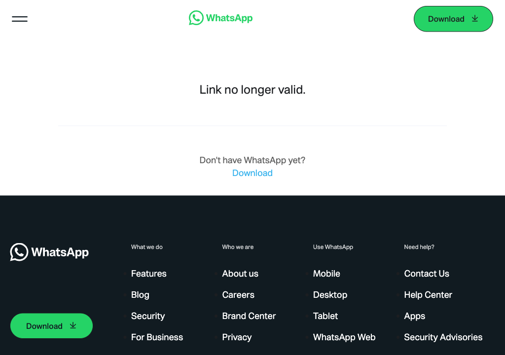
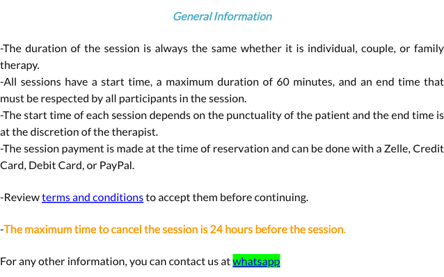
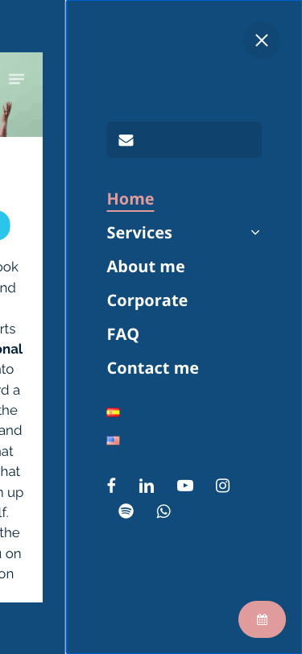
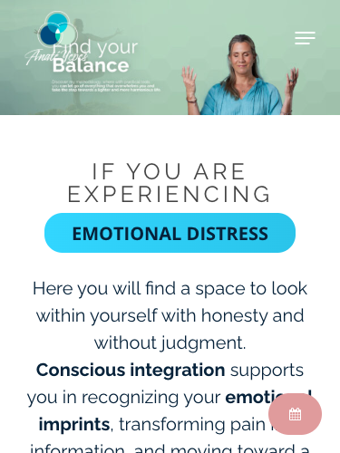
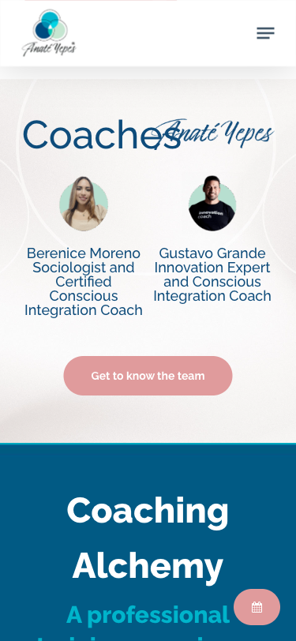
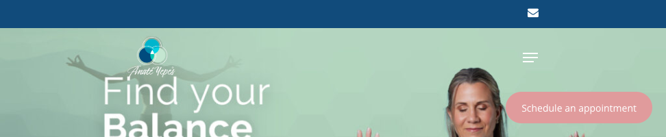
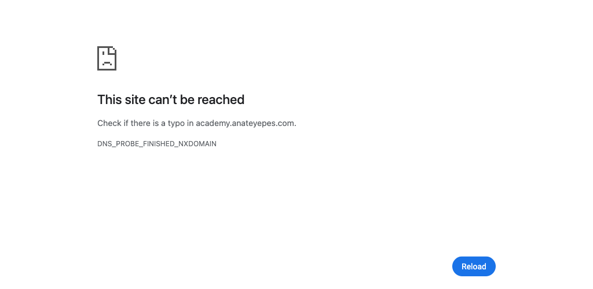
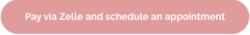
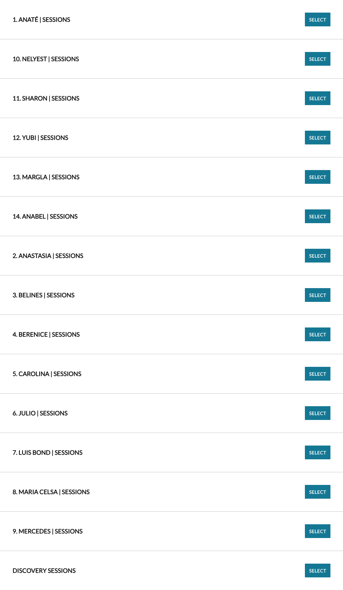

Revisión de UI/UX, responsive, enlaces, formularios, funnel de conversión, WhatsApp, SEO, Open Graph, performance y errores técnicos.
Se revisó el sitio completo (home en inglés y español, Servicios, Sobre mí, Corporate, FAQ, Team, Scheduling, Terms, Privacy) en desktop, tablet y mobile, incluyendo el código fuente, la consola de JavaScript, las peticiones de red, el sitemap, los metadatos y cada enlace de contacto/WhatsApp. El sitio tiene una base de contenido y diseño sólida — buena narrativa de marca, fotografía cálida, paleta de color coherente — pero arrastra varios problemas técnicos que sí están afectando la conversión hoy mismo, no son cosméticos.
Este es, con diferencia, el hallazgo más importante del informe porque afecta directamente el momento de mayor intención de compra. Rastreamos cada botón/ícono de WhatsApp del sitio hasta su destino real (sin enviar ningún mensaje) y encontramos cuatro rutas distintas, con tres números de teléfono diferentes y un enlace roto:
| Ubicación | Enlace | Destino real | Estado |
|---|---|---|---|
| Ícono WhatsApp en la barra superior (header) y en los íconos sociales del footer | wa.link/6jpjau |
+58 412-8016868 (Venezuela) | ✅ Abre chat, sin mensaje precargado |
| Teléfono escrito en el footer: "+1 (954) 901 6508" | wa.link/uvcsuw |
+1 954 901 6508 (EE. UU.) | ✅ Coincide con el número mostrado |
| Botón grande "Contact me!" en la sección "If you encountered any difficulty scheduling…" (home) | wa.me/5491124094771 |
+54 9 11 2409-4771 (Argentina) | ✅ Abre chat |
| Enlace de texto "whatsapp" en la página Book your appointment (/scheduling/) y en la página FAQ (aparece 2 veces más: "WhatsApp Customer Service" y "here") | wa.me/message/GB7WNKYFRPDYM1 |
— | ❌ "Link no longer valid." (roto) |
El link roto (wa.me/message/GB7WNKYFRPDYM1) no es un caso aislado: es el mismo código muerto que se usa en tres ubicaciones — la página de agendamiento, y dos veces en la FAQ ("WhatsApp Customer Service" y "download the attached PDF here… contact us"). Un visitante con dudas justo antes de pagar, que hace clic para preguntar algo, cae en una página de error de WhatsApp. Es probable que este código haya pertenecido a una cuenta de WhatsApp Business que fue eliminada o migrada.
https://wa.me/message/GB7WNKYFRPDYM1: WhatsApp responde "Link no longer valid."
Captura real del enlace roto wa.me/message/GB7WNKYFRPDYM1.
Un usuario que visite el home y luego la sección de ayuda para agendar puede terminar escribiéndole a un número en Venezuela, otro en Argentina o uno en EE. UU., dependiendo de qué botón tocó — sin ningún texto que aclare "este es el WhatsApp oficial" o que distinga, por ejemplo, atención en Venezuela vs. Argentina vs. EE. UU. Esto genera desconfianza (parece poco profesional) y probablemente fragmenta la atención al cliente entre personas o dispositivos distintos.
Ninguno de los enlaces usa el parámetro text= de la API de WhatsApp. Agregar algo como "Hola, quiero agendar una sesión de Integración Consciente" reduce fricción y mejora la tasa de respuesta, porque el visitante no tiene que redactar desde cero.
Intentamos completar y enviar un formulario de contacto usando el nombre Patricio y el correo patricio@myalkimia.com, como se nos pidió. No fue posible porque el sitio no tiene ningún formulario de contacto tradicional (nombre + email + mensaje) en ninguna página pública.
Revisamos el DOM de la home, Servicios, Sobre mí, Corporate, FAQ, Team y Scheduling. El único elemento <form> presente en toda la home es el buscador nativo de WordPress (oculto, con un solo campo de texto llamado s). No hay Contact Form 7, WPForms, Gravity Forms ni ningún formulario de leads visible.
mailto:info@anateyepes.com, disponible solo como un ícono de sobre pequeño en la barra superior y en el footer; (3) el sistema de reservas (Acuity Scheduling), que exige crear una cuenta ("Sign Up") antes de ver siquiera los horarios disponibles.Los botones "Download more info" de Coaching Alchemy y Balance in Action abren directamente un archivo de Google Drive en una pestaña nueva, sin pedir nombre ni email antes de la descarga. Es una oportunidad de conversión perdida: cualquiera puede bajar el material sin dejar ningún dato de contacto, y el archivo se llama literalmente Brochure Alquimia Coaches (1).pdf — un nombre de archivo de trabajo, no un asset terminado.
Recomendación concreta: lo más cercano a un "formulario" que existe en todo el sitio es el registro del sistema de reservas (Acuity) en /scheduling/, que crea una cuenta de cliente real en el sistema de Anaté antes de poder escribir ningún mensaje. No completamos ese registro porque implicaría crear una cuenta de cliente permanente a nombre de Patricio en la base de datos del negocio, algo que excede el alcance de "probar el formulario". Quedamos a disposición para completarlo si se autoriza explícitamente.
Así se ve el recorrido real de un visitante, de punta a punta:
1. Aterriza en anateyepes.com → el sitio carga en inglés por defecto, aunque las señales de marca (nombres de las coaches, método de pago Zelle, números de WhatsApp en Venezuela/Argentina) apuntan a una audiencia mayormente hispanohablante/latina. Esto es una fricción sutil pero real para el público objetivo.
2. Ve el CTA principal → hay dos: el botón "CONTACT ME" del menú y el botón flotante rosa "Schedule an appointment" que sigue al usuario en todo el scroll. Ambos, al hacer clic, no llevan a un formulario ni a la agenda, sino a una sección de la misma home que dice "si tuviste problemas para agendar, escribinos por WhatsApp" (el número de Argentina).
3. Si en cambio busca agendar directamente → tiene que ir a /scheduling/, donde antes de ver un horario o un precio debe "Sign Up" (crear cuenta) o "Login". No hay reserva como invitado.
4. Al elegir con quién agendar → la lista de categorías incluye 14 nombres, de los cuales solo 2 (Berenice y Gustavo) están presentados públicamente en la página "Team". El resto (Nelyest, Sharon, Yubi, Margla, Anabel, Belines, Carolina, Julio, Maria Celsa, Anastasia…) aparecen sin biografía, sin foto en el sitio y sin ninguna mención previa — genera dudas sobre quién es esa persona antes de pagar.
5. Si tiene dudas y busca ayuda → el enlace de soporte de esa misma pantalla de reserva es el WhatsApp roto (punto 1).
6. El pago se resuelve con Zelle, tarjeta o PayPal al momento de reservar; para Zelle además hay que volver a escribir por WhatsApp para coordinar el descuento.
Entre el registro obligatorio, la falta de un formulario simple, los números de WhatsApp inconsistentes y el enlace de soporte roto, un visitante indeciso tiene demasiadas oportunidades de abandonar antes de completar una reserva. Cada fricción es pequeña por separado, pero se acumulan en la ruta crítica de conversión.
Paleta de color coherente (verde salvia, azul petróleo, rosa palo), buena fotografía de la propia Anaté, estructura de secciones clara (dolor → método → equipo → programas → academia → comunidad → contacto) y microcopys cálidos y humanos.
En la página de reservas, la frase "The maximum time to cancel the session is 24 hours before the session" está en naranja, y la palabra "whatsapp" tiene un resaltador verde neón (estilo marcador fluorescente) que no aparece en ningún otro lugar del sitio. Da la sensación de texto pegado desde un editor sin revisar el estilo final.

Bloque "General Information" en /scheduling/.
El menú hamburguesa se abre como un panel lateral que cubre solo una parte del ancho de pantalla, dejando el contenido de la página totalmente visible y legible detrás, sin ningún overlay oscuro. No es un error técnico, pero visualmente es confuso: se leen dos capas de texto superpuestas al mismo tiempo.

Menú abierto a 375px: el contenido de fondo sigue legible.
Pedir "Sign Up" antes de mostrar disponibilidad es una barrera de UX habitual en sistemas de agenda tipo Acuity, pero vale la pena evaluar si se puede mostrar al menos el calendario de disponibilidad y el precio antes de pedir el registro, para no perder gente en esa pantalla.
Probamos el sitio en tres anchos de pantalla: mobile (~375–472px), un ancho intermedio tipo tablet/notebook chico (~972px) y desktop (~1288px).
En todos los anchos de mobile probados (375px y 472px), la firma "Anaté Yepes" (el logo en cursiva) queda montada literalmente encima del texto "Find your Balance" del hero, y lo mismo vuelve a pasar más abajo, donde el título "Coaches" se cruza con la firma decorativa "Anaté Yepes" que aparece de fondo. Es lo primero que ve cualquier visitante que entra desde el celular.

Hero, 375px de ancho.

Sección "Coaches", mismo ancho.
En ese rango de ancho, la barra superior pasa a mostrar solo el ícono de sobre (mail) y el resto de los íconos de idioma (banderas ES/EN) desaparecen de la vista y tampoco están dentro del menú hamburguesa. Un usuario de tablet no tiene forma de cambiar de idioma en ese breakpoint.

Header a 972px de ancho: solo queda el ícono de mail.
user-scalable=0 en el viewportEl <meta name="viewport"> incluye maximum-scale=1, user-scalable=0, lo que impide hacer zoom con los dedos en mobile. Es una práctica desaconsejada por criterios de accesibilidad (WCAG 1.4.4), sobre todo pensando en usuarios con baja visión que buscan contenido de bienestar/salud emocional.
Verificamos el código de respuesta HTTP de las 16 URLs listadas en el sitemap de Yoast más los enlaces de navegación, WhatsApp, PDFs y el subdominio de la academia.
| Resultado | Detalle |
|---|---|
| ✅ Todas las páginas del sitemap responden 200 | Home, Servicios, Sobre mí, Team, FAQ, Scheduling, Terms, Privacy, Tienda, Carrito, Mi cuenta, versiones /es/, etc. |
| ✅ PDF de Balance in Action | /wp-content/uploads/2023/11/Workshop-Equilibrio-en-accion-Anate-Yepes.pdf — 200 OK |
❌ academy.anateyepes.com | El subdominio mencionado en la FAQ ("Visit academy.anateyepes.com…") no resuelve: DNS_PROBE_FINISHED_NXDOMAIN. No existe. |
❌ wa.me/message/GB7WNKYFRPDYM1 | "Link no longer valid" (ver sección WhatsApp) |
| ⚠️ La tienda de WooCommerce existe pero no se promociona | /tienda/, /carrito/, /finalizar-compra/, /mi-cuenta/ devuelven 200 pero no hay ningún enlace visible hacia ellas desde la navegación principal — son páginas "fantasma" que igual cargan CSS/JS de WooCommerce en todo el sitio (ver sección de velocidad). |
La FAQ explica que para comprar un workshop online hay que "Visit academy.anateyepes.com, subscribe for free, choose your preferred workshop…". Ese subdominio no existe (no resuelve DNS), por lo que toda la ruta de venta de workshops online descrita en la FAQ está rota para cualquiera que la siga al pie de la letra.

academy.anateyepes.com no resuelve.
Medimos el contraste real (fórmula WCAG 2.1) de los dos botones de llamada a la acción más importantes del sitio: el botón flotante "Schedule an appointment" (visible en todas las páginas, todo el scroll) y el botón "Pay via Zelle and schedule an appointment" del home.
rgb(255,255,255) sobre fondo rgb(224,155,156)Botón flotante, presente en todo el sitio.

Botón "Pay via Zelle…" del home.
Un contraste de 2.25:1 está muy por debajo de los mínimos WCAG AA: 4.5:1 para texto normal y 3:1 para texto grande/negrita. En la práctica, el texto blanco sobre ese rosa se ve tenue y cuesta leerlo, especialmente en pantallas con brillo bajo o luz solar directa — justo en los dos botones que existen para que la gente agende y pague.
Sugerencia rápida: oscurecer el fondo del botón (por ejemplo a un tono más saturado de ese mismo rosa, tipo #c9636a) o usar texto en el azul marino de la marca (#1f3a5f) en vez de blanco — cualquiera de las dos opciones ya alcanza un contraste por encima de 4.5:1 sin cambiar la identidad visual.
Son imágenes sin atributo alt o con alt="": afecta tanto a accesibilidad (lectores de pantalla) como al posicionamiento de esas imágenes en Google Imágenes. Las pocas que sí tienen alt (el logo, las banderas de idioma) están bien resueltas — falta extenderlo al resto: fotos de Anaté, de los coaches, de los "Allies", e íconos de las secciones de Coaching Alchemy / Balance in Action / Academy.
La foto usada para compartir el link en redes (DSC_8526-Edit-Edit-scaled.jpg) pesa 362 KB. No es grave, pero se puede bajar a menos de 150–200 KB en JPG/WebP sin pérdida visible, ya que solo se usa como miniatura de vista previa.
Conviven fotos profesionales muy cuidadas (Anaté en el hero) con capturas más informales tipo snapshot (foto de grupo en una cocina, testimonios). No es un error, pero homogeneizar el tratamiento (color, recorte) sumaría a la percepción de marca premium que transmite el resto del sitio.
El copy en inglés es cálido, en primera persona, con buen uso de negritas para las palabras clave ("emotional imprints", "conscious integration"). Los títulos de sección son claros y siguen una narrativa lógica.
El dominio principal (anateyepes.com) carga en inglés, pero múltiples señales del propio sitio apuntan a una audiencia mayoritariamente latina/hispanohablante: pago por Zelle con "descuento especial" (mecanismo muy usado por la diáspora venezolana), números de WhatsApp de Venezuela y Argentina, nombres de las coaches, y el hecho de que la versión en español tenga mejor SEO (meta description propia) que la versión en inglés. Vale la pena revisar si el español debería ser el idioma por defecto, o al menos ofrecer una detección/sugerencia de idioma más visible.
El PDF del workshop corporativo enlazado desde la FAQ en inglés se llama Workshop-Equilibrio-en-accion-Anate-Yepes.pdf y su contenido está en español, sin aviso previo al usuario que lee la página en inglés.
| Página | Meta description | Cantidad de <h1> |
|---|---|---|
| Home (EN) — anateyepes.com/ | ❌ Ausente | 0 |
| Home (ES) — /es/inicio/ | ✅ Presente ("Soy Anaté Yepes, especialista en Integración Consciente…") | — |
| FAQ (EN) | ❌ Ausente | 1 ✅ |
| Team (EN) | ❌ Ausente | 0 |
| Scheduling (EN) | ❌ Ausente | 0 |
El sitio tiene Yoast SEO instalado y configurado (se ve en el sitemap y en que la home en español sí tiene su descripción cargada), pero eso no se replicó en las páginas en inglés que revisamos. Sin meta description, Google genera un fragmento automático (a veces poco atractivo) en los resultados de búsqueda. Y sin H1, se pierde la señal más fuerte de "de qué trata esta página" para los buscadores — hoy el título más grande de la home es visualmente un <h2> o menor, no un <h1>.
robots.txt permite el rastreo completo (Disallow: vacío), el sitemap XML de Yoast está bien formado y accesible en /sitemap.xml, hay URL canónica declarada, y las etiquetas hreflang/og:locale (en_US / es_ES) están presentes.
Sería una buena práctica agregar la línea Sitemap: https://anateyepes.com/sitemap_index.xml al final del robots.txt.
Anaté Yepes | Wellness Ecosystem - Anaté Yepes: el nombre aparece al principio y al final, gastando caracteres útiles del snippet de búsqueda sin aportar información nueva.
| Etiqueta | Estado |
|---|---|
og:title | ✅ Presente |
og:image | ✅ Presente |
og:url / og:type | ✅ Presentes |
og:description | ❌ Ausente |
twitter:title, twitter:description, twitter:image | ❌ Ausentes (solo está twitter:card) |
Sin og:description, cuando alguien comparte anateyepes.com en WhatsApp, Facebook o LinkedIn, la vista previa puede mostrar texto aleatorio tomado del cuerpo de la página en lugar de un mensaje pensado para generar clic. Es una pieza de "marketing gratis" que hoy se está desaprovechando en cada share.
En /scheduling/ (y en el dominio nativo de Acuity, anateservices.as.me), la lista "Select Appointment Category" se ordena como texto en vez de como número: aparece 1, 10, 11, 12, 13, 14, 2, 3, 4, 5… en vez de 1, 2, 3, 4…. Da la impresión de un sistema mal configurado justo en la pantalla donde el usuario tiene que elegir con quién trabajar.

Orden real de la lista en anateservices.as.me.
https://geoip.maxmind.com/geoip/v2.1/country/me y dos llamadas a https://csp.secureserver.net/eventbus/web (telemetría del hosting/GoDaddy) devuelven 503 Service Unavailable en todas las cargas probadas. No rompen la página visualmente, pero son peticiones fallidas que consumen tiempo de carga y quedan registradas como errores en la consola de red.
No se detectaron excepciones de JS lanzadas por el código del propio sitio durante la navegación por las distintas páginas. El único mensaje de error en consola provino de una extensión del navegador ajena al sitio (no aplica).
Al cargar la home contamos 103 peticiones: 42 scripts y cerca de 40 hojas de estilo. Entre esas hojas de estilo se cargan stripe-settings.css, wc-blocks.css y woocommerce-layout.css — es decir, todo el peso de WooCommerce y Stripe se descarga en la home aunque no hay tienda visible ni carrito promocionado en ningún menú. A esto se suman intlTelInput, countrySelect y los formularios de MailerLite, también cargados de forma global.
Recomendación: Si WooCommerce/Stripe no se están usando activamente (no hay tienda enlazada en ningún menú), desactivar esos plugins —o al menos su carga de assets en páginas que no son de tienda— aliviaría de forma inmediata una porción importante de las 103 peticiones.
wa.me/message/GB7WNKYFRPDYM1) en Scheduling y FAQ — aparece en el momento de mayor intención de compra.academy.anateyepes.com en la FAQ (el subdominio no existe).og:description y las etiquetas twitter:* faltantes.